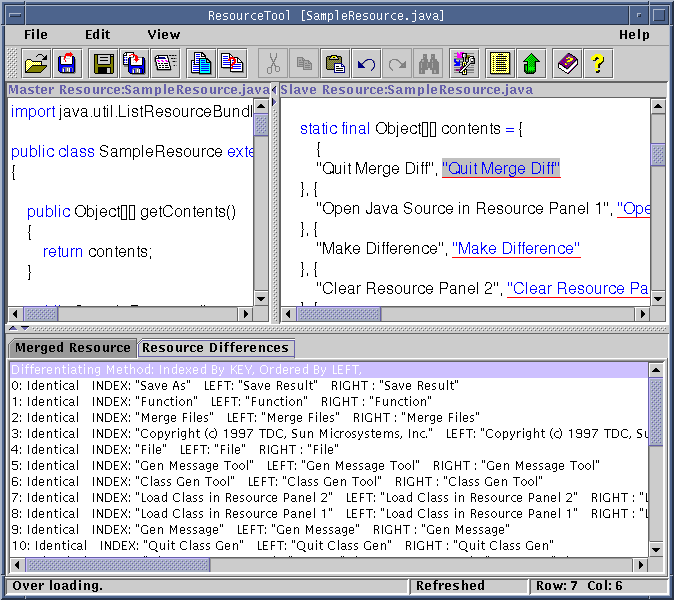
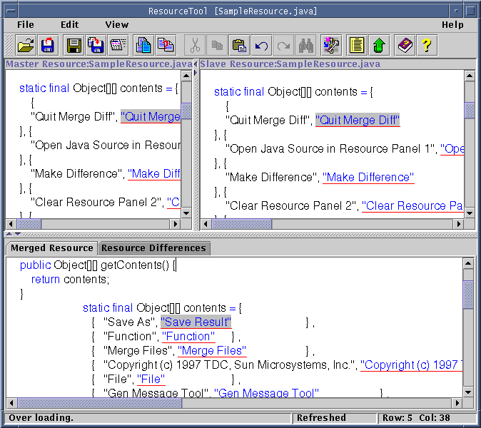
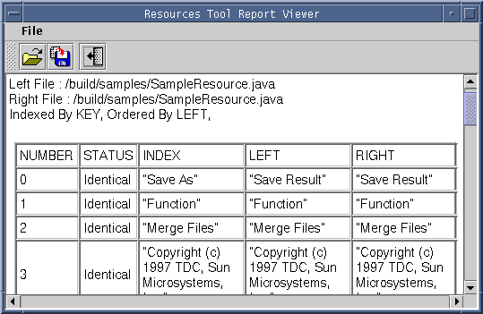
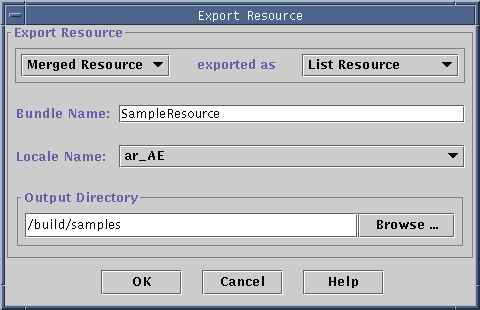

Handling Java resource bundles, particularly the frequent revisions
of those bundles, is a difficult part of the internationalization/localization
process. The Resource tool helps you to handle message files in several
ways:
Using
the Resource Tool
Getting Started
with the Resource Tool
With GUI method, in the main window of I18n/L10n Toolkit 2.0,
select Resource Tool, then you can get Resource Tool main
window.
Menus and Buttons
The Resource Tool UI includes several buttons and menus. Only
those unique to this tool are described here.
-
File-Open
There are two choices for this menu item: As Master and As Slave. To
merge two resource file, Resource Tool must firstly open two files. One
is opened as Master and the other is opened as Slave. The master file should
be opened at first. When saving or exporting the merged result, the file
name to save or the selections to export is from the Master file by default.
-
File-Differentiate
After opening two resource files, press this menu item, then a Resource
Differences window appears in the lower area of the Resource Tool
main window (figure1).
-
File-Merge
Merging the two resource bundles into one. After you merge two files,
you will find the window popup (figure2). You can view the merged file
there.
-
File-Export
Exporting the merged resource into a resource bundle you designate.
-
View-Differences Report
Creating a difference report of the two resource bundles (figure3).

Figure1: Resource Tool main window: Differenciate

Figure2: Resource Tool main window: Merge
-
File-Save
You can save each of the three to a file, the master resource, the
merged resource and the resource differences.
-
Edit-Options
In the miscellaneous panel, check View Value As Unicode, will
show the resource value in ASCII unicode format. Check Merge Comments
will keep comments in source code when merging resource.
Merging
Files and Reporting Differences
-
Open a resource bundle file by choosing File-Open-As Master and
select the file you want from the file and directory list.
-
Open a resource bundle file by choosing File-Open-As Slave and select
the file you want from the file and directory list.
-
At this time, you can either select to merge the files or generate a difference
report.
-
Merging Files
Select File-Merge, then the result of combination of the two
resource bundles is displayed in the window as shown in figure2. Click
Save or File-Save-Merged Resources to save the result.
-
Creating a Difference Report
Select File-Differenciate, a report of the differences between
the two resource bundles is displayed in the lower window as shown in figure1.
Select File-Save Resource Differences to save the report to a file.
Select View-Differences Report to open a report viewer to view the
report.

Figure3: Resources Difference Report Viewer
Exporting Resource
This function allows a resource bundle to be exported and saved as another
Java source file or property resource file with optional different bundle
type and/or bundle name.
-
Select File-Export to pop up the exporting resource dialog (figure4).
-
If there is no resource merged, you can see only the Master Resource
is in the list. If there is resource merged, then you will see the Merged
Resource as well as the Master Resource is in the list with the former
selected.
-
There are three types of resource bundles the exported resource can be
stored as: List Resource Bundle, Property Resource
Bundle and Array Resource Bundle. The former two
are defined in JDK, while the later one is defined in APIs of this Internationalization
tool.
-
Then you can accept the default resource bundle name (same as the parameter
in getBundle method), locale name, and the output directory, or
you can type in or select these values.
-
After your selection, press OK to export the selected resource to
the resource bundle file according to the above choices and save it relative
to the output directory.

Figure4: Resources Difference Report Viewer